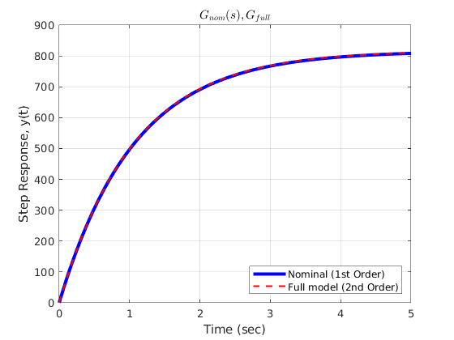
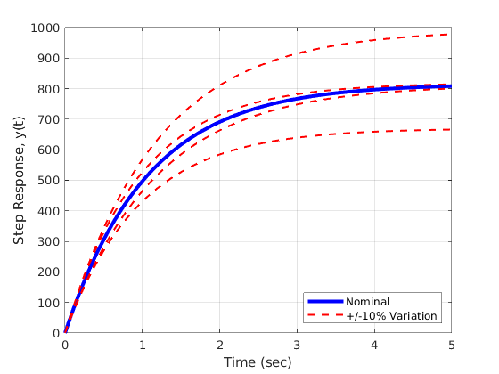

Model Simplifications and Uncertainities
The models used for control design are often simplified and contain a variety of inaccuracies including uncertain parameters, unmodeled dynamics, nonlinear effects, and implementation effects. It is common to design the controller with the simplified model and then check performance on a more accurate model.
Contents
DC MOTOR Full model (includes faster dynamics)
G_full = tf(1.23e-3, [3e-10 1.6e-6 1.505e-6])
G_full =
0.00123
---------------------------------
3e-10 s^2 + 1.6e-06 s + 1.505e-06
Continuous-time transfer function.
DC MOTOR Simplified model (dominant pole)
a0 = 0.94; % 1/sec b0 = 766.8; % rad/sec^2V G_nom = tf(b0, [1 a0])
G_nom = 766.8 -------- s + 0.94 Continuous-time transfer function.
Unmodeled Dynamics
Tf = 5; [y_full, t] = step(G_full, Tf); [y_nom, t] = step(G_nom, Tf); figure(1) plot(t, y_nom, 'b', 'LineWidth',3); hold on; plot(t, y_full, 'r--', 'LineWidth',1.5); legend('Nominal (1st Order)', 'Full model (2nd Order)', 'Location','southeast'); xlabel('Time (sec)') ylabel('Step Response, y(t)') title('$G_{nom}(s) , G_{full}$', 'interpreter', 'latex'); grid on; hold off;
Uncertain Parameters
figure(2) [y_nom, t] = step(G_nom, Tf); plot(t, y_nom, 'b', 'LineWidth',3); hold on; a = [0.85 0.85 1.03 1.03]; b = [690.1 843.5 690.1 843.5]; for i = 1:length(a) G = tf(b(i),[ 1 a(i)]); [ydummy, t] = step(G, Tf); plot(t, ydummy, 'r--', 'LineWidth',1.5); hold on; end hold off; legend('Nominal', '+/-10% Variation', 'Location','southeast'); xlabel('Time (sec)') ylabel('Step Response, y(t)') % title('$G_{nom}(s) , G_{full}$', 'interpreter', 'latex'); grid on;